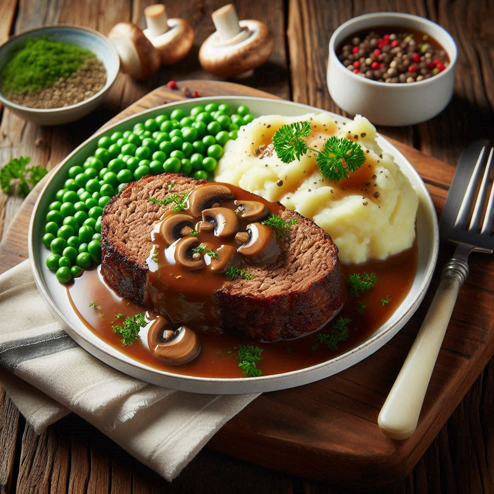

Meatloaf

Description
The meatloaf in the image is a sight to behold, with its rich,
golden-brown crust and succulent, juicy interior. The top of the
meatloaf is glazed with a luscious, savory mushroom gravy that
glistens under the light. The meatloaf itself is a perfect blend of
ground beef, breadcrumbs, and seasonings, expertly mixed and baked
to perfection. Each slice promises a burst of flavor, with the
tender meatloaf melting in your mouth and the rich gravy adding a
touch of umami goodness. This dish is a classic comfort food that
will warm your heart and soul with every bite.
Ingredients
- 1/4 cup butter
- 2 cups shiitake mushrooms, diced
- 1 pinch salt
- 1 sprig fresh rosemary, chopped
- 3 tablespoons all-purpose flour
- 2 1/2 cups beef broth
- salt and pepper to taste
- 1/2 cup heavy cream
-
1 (2 1/2 pound) uncooked prepared beef, veal and pork meatloaf
Steps
- Preheat the oven to 325 degrees F (165 degrees C).
-
Melt butter in an oven-safe skillet over medium-high heat.
Stir in mushrooms and a pinch of salt; cook and stir until
mushrooms begin to brown, about 5 minutes.
-
Stir in fresh rosemary. Add flour and stir to coat the
mushrooms; cook and stir for about 3 minutes.
-
Whisk in beef broth, 1/2 cup at a time, whisking constantly
to prevent lumps.
-
Turn heat to high and bring the sauce to a simmer. Simmer a
few minutes until sauce starts to thicken. Season with salt
and pepper to taste.
-
Remove from heat and stir in heavy cream.
-
Slide prepared meatloaf into the sauce. Spoon sauce over
the top of the meatloaf.
-
Bake in the preheated oven until no longer pink in the
center, about 1 1/2 hours. An instant-read thermometer
inserted into the center should read at least 160 degrees
F (70 degrees C).
-
Remove pan from the oven and gently remove meatloaf to a
serving platter.
- Skim off any extra fat from the surface of the sauce.
-
Bring the sauce to a boil over medium-high heat to reduce
until thick, about 5 minutes.